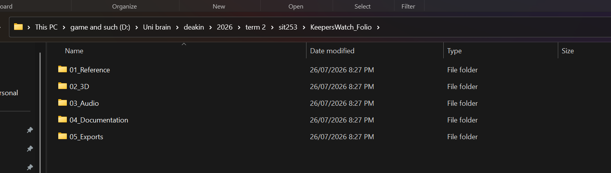

Asset Management System
My local folder structure traces straight back to the rows in the Asset Plan tables, so anyone opening it can find an asset without me walking them through it.
KeepersWatch_Folio/ ├── 01_Reference/ (moodboard exports, research PDFs, citations) ├── 02_3D/ │ ├── LighthouseLamp/ — hero asset, DONE (modelled + textured) │ │ ├── LighthouseLamp.blend (source file) │ │ ├── LighthouseLamp.blend1 (autosave backup) │ │ ├── LighthouseLamp.glb (exported, SketchFab-ready) │ │ └── screenshots/ (11 dev-process shots: blockout → assembly → textured final) │ ├── LobsterTrap/ — DONE (modelled), texture pass pending │ │ ├── LobsterTrap.blend │ │ ├── LobsterTrap.blend1 │ │ ├── LobsterTrap.glb │ │ └── screenshots/ (18 dev-process shots: frame → mesh cage → funnel → assembly) │ ├── Rowboat/ — not started, planned Week 8–9 │ ├── PierPost/ — not started, planned Week 8–9 │ └── SeagullNest/ — not started, stretch asset, Week 10 if time allows ├── 03_Audio/ │ ├── Raw/ (unedited source recordings/downloads — not started) │ └── Final/ (edited, folio-ready .wav files — not started) ├── 04_Documentation/ (asset list, timeline, working docs) └── 05_Exports/ (final render screenshots, glTF/SketchFab bundles)

Naming convention: AssetType_AssetName_Version — e.g. 3D_LighthouseLamp_v2.blend, AUD_Foghorn_Ambient_Final.wav. No generic names ("new folder," "stuff," "test"). Every folder/file name traces directly back to a row in the Asset Plan tables.
Why there's no separate textures/ subfolder: both completed models use Blender's Principled BSDF nodes with flat procedural colours (no external image textures — see the material breakdown for the Lighthouse Lamp's `LH_White`, `LH_Red`, `LH_DarkMetal` etc.), so there's no UV-mapped image file to store separately; the colour data lives inside the `.blend` file itself. If a later asset (Rowboat, Pier Post) ends up needing an actual painted texture map, I'll add a `textures/` subfolder under that asset's own folder at that point, following the same naming convention.
Per-Asset Production Breakdown
Granular stage tracking per asset, since the phase-level table above doesn't show individual production steps.
| Asset | Modelled | UV / Materials | Textured | Refined & finalised |
|---|---|---|---|---|
| Lighthouse Lamp Housing (hero) | Done — Week 6 | Procedural materials assigned (no UV needed, no image textures) | Done — Week 7 | Week 8 — fix window material contrast (currently reads flat under bright lighting), polish night-beam glow |
| Lobster Trap | Done — Week 7 | Week 8 — decide procedural-colour vs. painted-image approach | Week 8 | Week 9 |
| Rowboat | Week 8 | Week 8 | Week 9 | Week 9 |
| Pier Post | Week 9 | Week 9 | Week 9 | Week 9 |
| Seagull Nest (stretch, cut candidate) | Week 10, if time allows | Week 10 | Week 10 | Week 10 |
Timeline
| Week | Phase | Planned tasks & targets | Status |
|---|---|---|---|
| Week 3 | Conceptualisation | Lock theme + concept, build visual + sonic moodboard, draft asset list | Done |
| Week 4 (Fri 31 Jul) | Progressive Folio 1 due | Submit documentation, references, moodboards, asset plan, asset mgmt, timeline, reflection | Done |
| Week 5 | Technical planning → Execution | Set up Blender project files per folder structure; begin Lighthouse Lamp Housing (hero asset) | Delayed — started later than planned |
| Week 6 | Execution | Finish Lighthouse Lamp Housing (textured); begin Rowboat modelling | Delayed |
| Week 7 (now, Fri 28 Aug) | Progressive Folio 2 due | Minimum 2 completed/textured 3D assets, updated asset mgmt + timeline, reflection | Lighthouse Lamp Housing: modelled + textured. Lobster Trap: modelled, texture pending. Rowboat not started. |
| Week 8–9 | Execution | Texture the Lobster Trap; begin Rowboat + Pier Post modelling; start sourcing raw audio | Planned (reordered — Rowboat pushed back to make room for the Lobster Trap's mesh work) |
| Week 10 | Execution | Finish Seagull Nest (stretch asset, if time allows); edit all 10 audio assets; integrate scene in Sketchfab/engine | Planned |
| Week 11 (Thu 24 Sep) | Final Folio due | All 4+ models, 10 audio assets, full eFolio polish, freeze + submit PDF | Due |
Risk & Plan B
The Lighthouse Lamp Housing did take longer than the original Week 5–6 window — I was still learning box modelling basics, and the gallery railing in particular took a lot more trial and error to get proportioned correctly than I'd expected. It's now modelled and textured, just later than planned.
Folio 2 update: to keep to two assets for this checkpoint, I pulled the Lobster Trap forward from its original Week 8–9 slot instead of starting the Rowboat, since the Trap was scoped as the simpler prop and gave me a faster path to a second asset. In practice it ended up more involved than planned — I modelled the wire-mesh cage and funnel netting as real geometry rather than baking that detail into the texture — so it's fully modelled but not yet textured. The Rowboat is now pushed into the Week 8–9 window instead. The Seagull Nest (the stretch 5th asset) is still the first thing to cut if time runs short before the Final Folio.